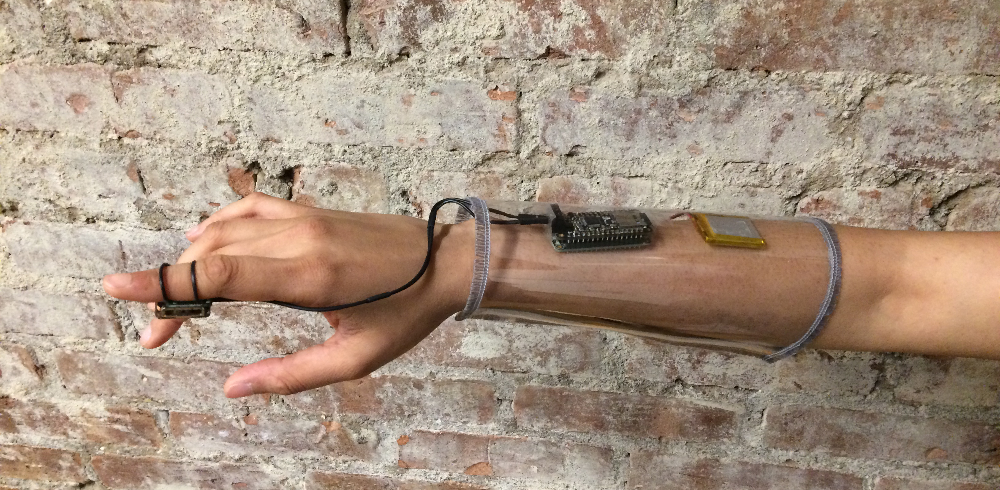

Unheard is a study situated within a philosophical premise that describes a reality which is imperceptible but intelligible. Every sound is a product of the impact of one surface on the another. But what do objects sound like when they aren’t in contact with other objects and what are the sounds of objects when they are not being defined by their relationship to other objects?
My research navigates the mysteries and realities of the aural essences of my hand. An aural essence, as I define it, is an imperceptible signifier that becomes audible when coupled with the essence of another object. And sound happens when two or more essences combine. This is a journey of the methods I developed to quantify these imperceptible sounds within us.

To isolate the aural essence of my hand, I first recorded my hand interacting with different objects, surfaces, materials and textures. After this, I recorded an impulse response of the object, which gave me the unique acoustic properties of that object. This technique is commonly used to get the acoustic charachteristics of spaces, but I used it for objects.
I wrote a script in python that allowed me to perform a mathematical function called deconvolution - to remove the sound of the surface from the sound of my hand and that surface together – leaving me with the aural essence of my hand.
This was the resusltant sound that I got.

I then worked on a performance piece for which I designed and constructed wearable with a bone conduction speaker that only allows for the audiece to hear the sounds only when their bone is contact with the speaker.
Some initial sketches and prototypes of the sleeve.
Feather with an Audio Board, a LiPo Battery and a Bone Conduction Transducer.